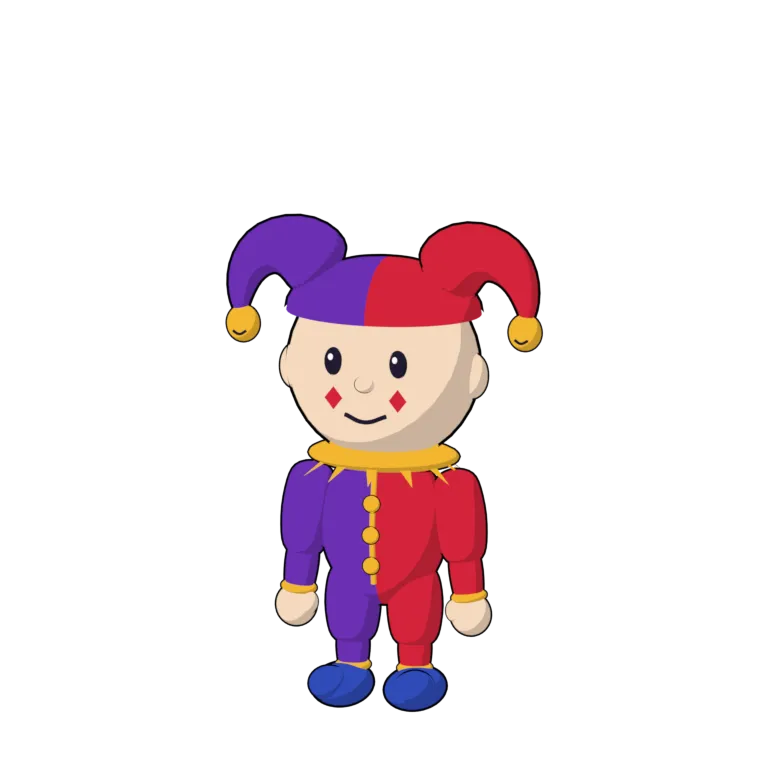

<!doctype html>
<html lang="en">
<head>
<meta charset="utf-8" />
<title>Devpost heading banner</title>
<link rel="stylesheet" href="devpost.css" />
<style>
  /* 1600 by 256. One section per render: heading.html?s=inspiration and so on (the list is below). */
  body { width: 1600px; height: 256px; }
  .sheet { left: 16px; right: 28px; top: 12px; bottom: 22px; }
  .row { position: absolute; inset: 0; display: flex; align-items: center; gap: 34px; padding-left: 64px; }
  .act { rotate: -5deg; translate: 0 -6px; }
  .act .tag { font-size: 28px; }
  .masking { translate: 0 4px; }
  .prop { position: absolute; top: 0; bottom: 0; right: 0; width: 640px; }
  .prop .note { white-space: nowrap; }
  .w1 { left: 30px; top: 2px; rotate: -8deg; }
  .w2 { right: 70px; top: 0; rotate: 6deg; }

  /* Inspiration: a clip nobody has seen yet. */
  .s-inspiration .snap { position: absolute; right: 110px; top: 30px; width: 250px; rotate: 4deg; }
  .s-inspiration .snap .mystery { height: 140px; }
  .s-inspiration .snap .washi { top: -16px; left: 80px; width: 90px; height: 28px; rotate: -4deg; }
  .s-inspiration .scrap { position: absolute; right: 410px; top: 52px; }
  .s-inspiration .scrap .note { font-size: 30px; }

  /* What it does: the Jester asks you to copy. */
  .s-what .puppet { right: 92px; top: -40px; width: 290px; height: 268px; }
  .s-what .puppet .stick { top: 205px; }
  .s-what .scrap { position: absolute; right: 360px; top: 58px; }

  /* How we built it: three parts, three people. */
  .s-how .w2 { right: auto; left: 960px; rotate: -4deg; }
  .s-how .parts { position: absolute; right: 80px; top: 28px; display: grid; gap: 12px; justify-items: end; }
  .s-how .parts .tag:nth-child(1) { rotate: -2deg; }
  .s-how .parts .tag:nth-child(2) { rotate: 1.5deg; translate: -26px 0; }
  .s-how .parts .tag:nth-child(3) { rotate: -1deg; translate: -8px 0; }
  .dot { display: inline-block; width: 22px; height: 22px; border-radius: 50%; background: var(--c); margin-right: 12px; box-shadow: 0 0 0 3px var(--photo), 0 0 0 5px var(--ink); }

  /* Tech stack: a little pile of paper tags. */
  .s-stack .pile { position: absolute; right: 80px; top: 30px; width: 520px; height: 190px; }
  .s-stack .pile .tag { position: absolute; font-size: 26px; }

  /* Challenges: the game's own "did not work" scraps, in stamp red. */
  .s-challenges .problem { position: absolute; padding: 12px 20px; background: var(--photo); color: var(--stamp); box-shadow: var(--lift); font: 400 26px/1.2 var(--type); white-space: nowrap; }
  .s-challenges .p1 { right: 96px; top: 40px; rotate: 3deg; }
  .s-challenges .p2 { right: 130px; top: 134px; rotate: -2.5deg; }
  .s-challenges .stampmark { position: absolute; right: 455px; top: 62px; white-space: nowrap; rotate: -12deg; padding: 6px 16px 6px; border: 5px solid var(--stamp); border-radius: 8px; color: var(--stamp); font: 400 40px/1 var(--sticker); opacity: .9; }

  /* Accomplishments: the score sticker everyone chases. */
  .s-wins .score { position: absolute; right: 110px; top: 44px; rotate: 6deg; font-size: 124px; }
  .s-wins .star { position: absolute; right: 500px; top: 74px; width: 104px; height: 104px; rotate: -12deg; filter: url(#sticker); }
  .s-wins .star i { display: block; width: 100%; height: 100%; background: var(--gold); clip-path: polygon(50% 2%, 62% 36%, 98% 38%, 69% 59%, 80% 95%, 50% 74%, 20% 95%, 31% 59%, 2% 38%, 38% 36%); }

  /* What we learned: a note to self. */
  .s-learned .scrap { position: absolute; right: 70px; top: 46px; }
  .s-learned .scrap .note { font-size: 34px; }

  /* What's next: a ticket for the next show. */
  .s-next .ticket-wrap { position: absolute; right: 80px; top: 50px; rotate: 3deg; }
  .s-next .ticket { width: 470px; height: 130px; padding: 0 120px 0 44px; font: 400 40px/1.05 var(--type); }
  .s-next .ticket small { display: block; font-size: 20px; margin-bottom: 6px; }
  .s-next .ticket .stub { right: 22px; width: 82px; }
</style>
</head>
<body>
<div class="sheet"><div class="kraft"></div></div>
<i class="washi w1"></i><i class="washi w2"></i>
<div class="row">
  <div class="act"><span class="tag" id="act"></span></div>
  <div class="masking"><h1 class="tape" id="title"></h1></div>
</div>
<div class="prop" id="prop"></div>
<script>
  // Each section: the act number, the heading, a washi pair, and its own prop on the right.
  const SECTIONS = {
    inspiration: { act: "Act 1", title: "Inspiration", tapes: ["w-pink", "w-dots"], prop: `
      <div class="scrap note-wrap"><p class="note">what if any clip<br>was a level?</p></div>
      <div class="snap photo"><i class="washi w-mint"></i><div class="mystery"><b>?</b></div></div>` },
    what: { act: "Act 2", title: "What it does", tapes: ["w-mint", "w-pink"], prop: `
      <div class="scrap note-wrap"><p class="note">Copy me.<br>I'm watching.</p></div>
      <div class="puppet"><span class="stick"></span></div>` },
    how: { act: "Act 3", title: "How we built it", tapes: ["w-dots", "w-mint"], prop: `
      <div class="parts">
        <span class="tag" style="font-size:26px"><i class="dot" style="--c:var(--p3)"></i>the clip side</span>
        <span class="tag" style="font-size:26px"><i class="dot" style="--c:var(--p1)"></i>the player side</span>
        <span class="tag" style="font-size:26px"><i class="dot" style="--c:var(--p2)"></i>the scoring engine</span>
      </div>` },
    stack: { act: "Act 4", title: "Tech stack", tapes: ["w-pink", "w-mint"], prop: `
      <div class="pile">
        <span class="tag" style="left:250px;top:8px;rotate:4deg">MediaPipe</span>
        <span class="tag" style="left:30px;top:30px;rotate:-5deg">TypeScript</span>
        <span class="tag" style="left:120px;top:110px;rotate:2deg">WebCodecs</span>
        <span class="tag" style="left:340px;top:100px;rotate:-3deg">Supabase</span>
      </div>` },
    challenges: { act: "Act 5", title: "Challenges", tapes: ["w-pink", "w-dots"], prop: `
      <span class="stampmark">Try again</span>
      <span class="problem p1">That did not work.</span>
      <span class="problem p2">No person found in this clip.</span>` },
    wins: { act: "Act 6", title: "Accomplishments", tapes: ["w-dots", "w-pink"], prop: `
      <span class="star"><i></i></span>
      <span class="score big-sticker">100%</span>` },
    learned: { act: "Act 7", title: "What we learned", tapes: ["w-mint", "w-dots"], prop: `
      <div class="scrap note-wrap"><p class="note">Same clip in,<br>same guide out.</p></div>` },
    next: { act: "Act 8", title: "What's next", tapes: ["w-mint", "w-pink"], prop: `
      <div class="ticket-wrap"><div class="ticket"><span><small>Admit one</small>Next show</span><i class="stub"></i></div></div>` },
  };
  const key = new URLSearchParams(location.search).get("s") || "inspiration";
  const s = SECTIONS[key];
  document.body.classList.add(`s-${key}`);
  document.getElementById("act").textContent = s.act;
  document.getElementById("title").textContent = s.title;
  document.title = s.title;
  document.querySelector(".w1").classList.add(s.tapes[0]);
  document.querySelector(".w2").classList.add(s.tapes[1]);
  document.getElementById("prop").innerHTML = s.prop;
</script>
<script src="common.js"></script>
</body>
</html>
